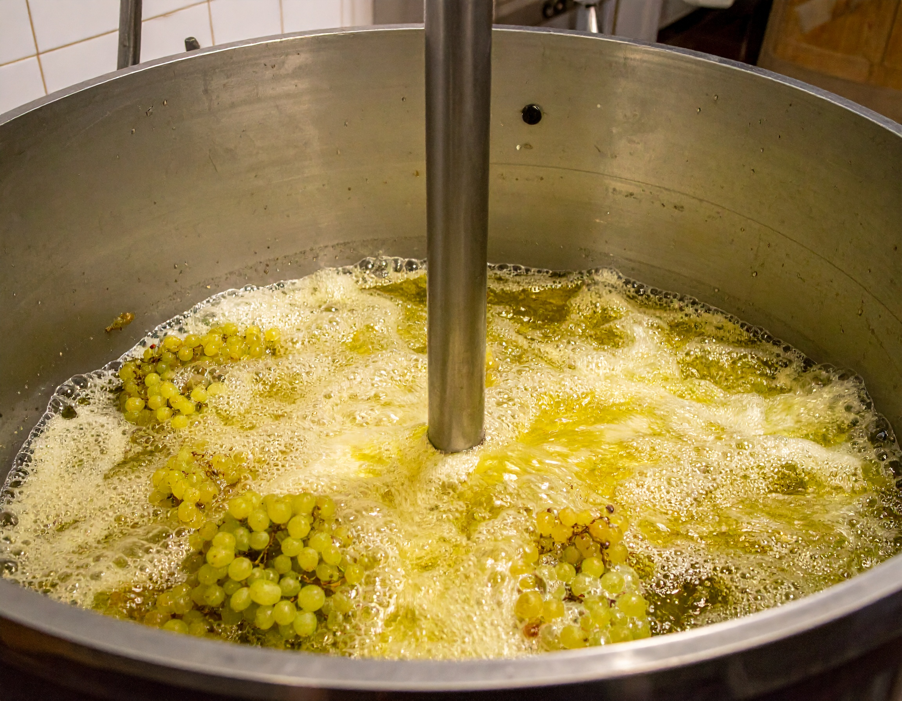

Plejning
ØKOLOGI
Respekt for jorden og vinens oprindelse
På Vingården Havblink er økologien ikke et valg – det er en grundholdning. Vi tror på, at vin skal dyrkes med respekt for naturens rytme og uden unødig indblanding.
Derfor dyrker vi alle vores druer økologisk, med fokus på jordens sundhed, biodiversitet og balancerede vækst.
Vi bruger hverken kunstgødning, pesticider eller sprøjtemidler. I stedet arbejder vi med naturens egne kredsløb og lader dækkeafgrøder, kompost og grønne metoder styrke jorden år efter år.
Vores vinmarker er levende økosystemer, hvor alt fra mikroorganismer til fugle og insekter har en naturlig rolle i vinens tilblivelse.
Økologien er med til at frembringe rene, ærlige vine, hvor druernes karakter og terroir kan træde tydeligt frem.
For os handler økologisk vinproduktion ikke kun om at undgå det skadelige – men om aktivt at opbygge det sunde og det smukke.
Det er godt for jorden, for vinen og for fremtiden.
GÆRING
Forvandlingens fine balance
Gæringen er vinens stille mirakel – det øjeblik hvor druemosten begynder sin forvandling til vin.
Hos Havblink Hvidvin ser vi gæringen som en nøje styret, men naturlig proces, hvor vi lader druernes egen karakter træde frem uden at overdøve den med for meget teknik.
Vi anvender primært naturlig gæring med de gærceller, der allerede findes på druerne og i kælderen. Det giver et mere stedbundet og autentisk udtryk i vinen, hvor årgang og terroir får lov at sætte sit præg.
I nogle tilfælde anvender vi nøje udvalgt økologisk gær for at sikre stabilitet, men altid med respekt for vinens balance og integritet.
Under hele forløbet kontrollerer vi temperatur og udvikling tæt, så vinens aromaer bevares friske og rene.
Gæringen – det er en langsom, tålmodig fase, hvor vi lytter og tilpasser os vinens egne rytmer.
Det er her, vinens personlighed formes.
